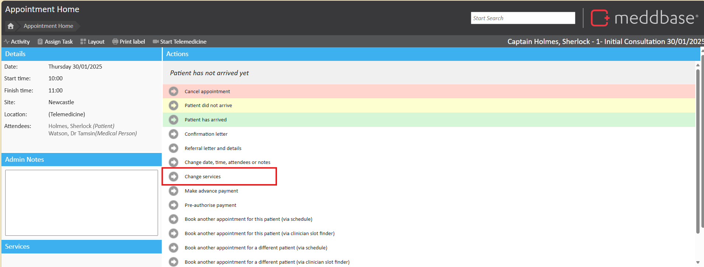
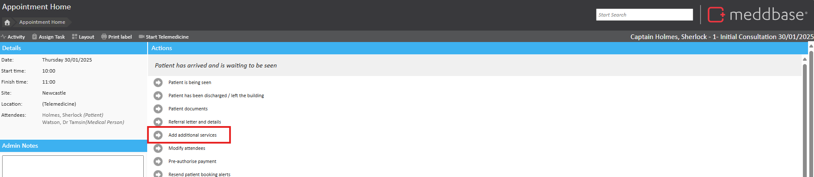
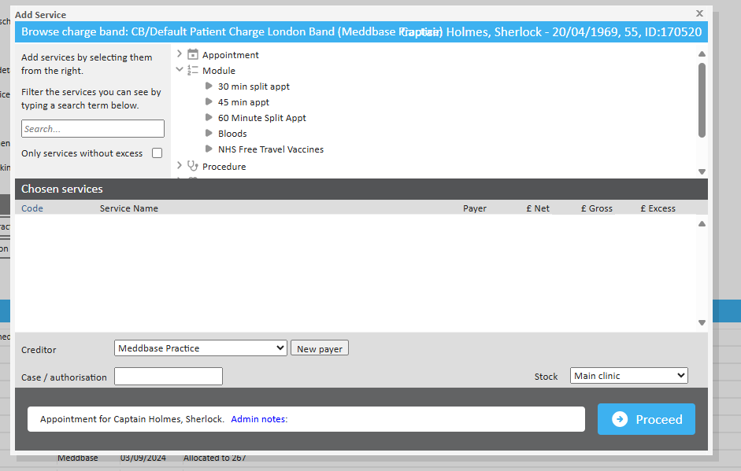
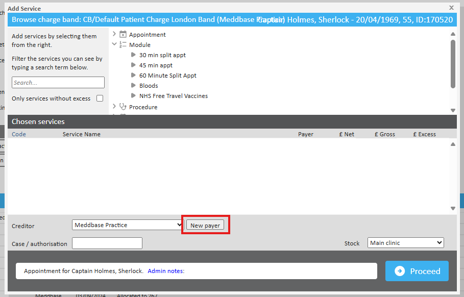

During or after scheduling an appointment, additional services may need to be added to reflect the full scope of treatment. This process ensures accurate billing and service allocation based on the patient's charge band.
What is the purpose of the article?
This article explains how to add or modify services on an existing appointment.
Adding services to an appointment
There are two ways to add services to an appointment:
Before the appointment starts – Open the appointment home page and click ‘Change Services’ in the Actions Pane.

After the patient has arrived – Click ‘Add Additional Services’ to include new services during the appointment.

Both options will open the Service Picker, which allows you to select and apply services to the appointment.
Using the Service Picker

The Service Picker provides a structured way to assign services:
Browsing Services – Navigate through service categories in the central pane.
Searching for Services – Use the search box on the left to locate a specific service.
Adding a Service – Click on a service to move it to the ‘Chosen Services’ box. The system will automatically populate the price based on the patient’s charge band.
Editing Prices – Adjust the net or gross price if required (excess amounts for insurers will also be displayed here).
Removing a Service – Click the red cross next to a service to remove it.
Changing the Payer and Charge Band
If the patient opts for a service outside their default charge band (e.g., choosing to self-pay for specific treatments), the payer and charge band can be updated:
Scroll to the bottom of the Service Picker and click ‘New Payer’.
A dialogue box will appear, allowing selection of a new payer and charge band.
Insurers, employers, legal companies, and schools will only be available if they are linked to the patient’s details and have a valid charge band.
Selecting a new charge band updates the available services accordingly.

Adjusting Payment Responsibilities
In cases where a company is covering the appointment but the patient must contribute a portion of the cost:
The Creditor can be changed from the default company to any Internal company.
A Co-Payment amount can be entered. This generates a secondary invoice directly to the patient.
Unlike excess payments, co-payments apply to the total invoice rather than specific services.